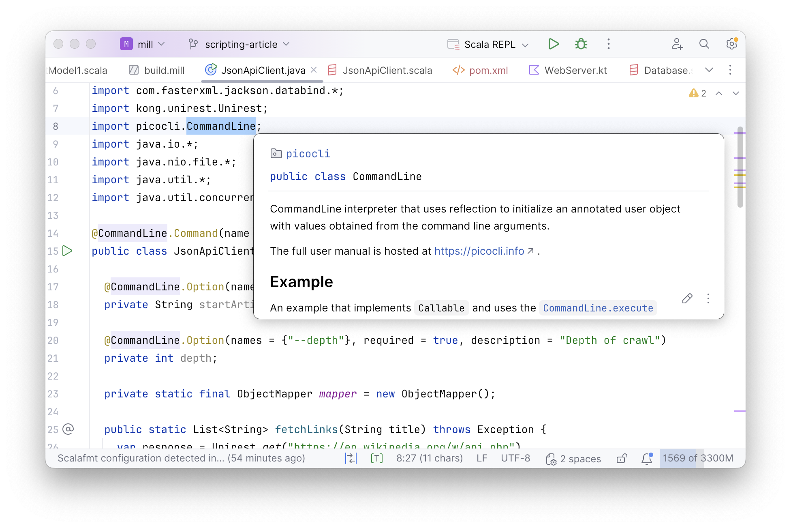
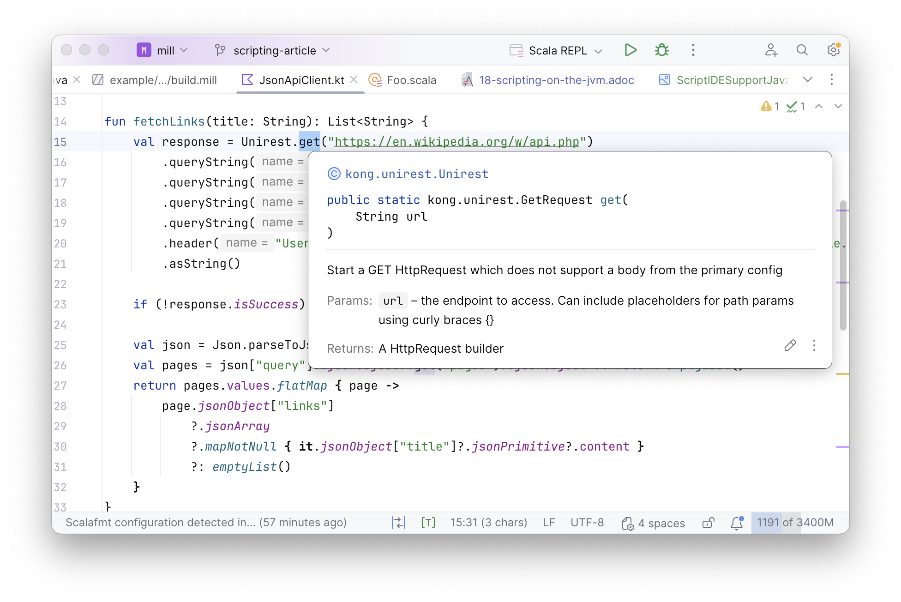
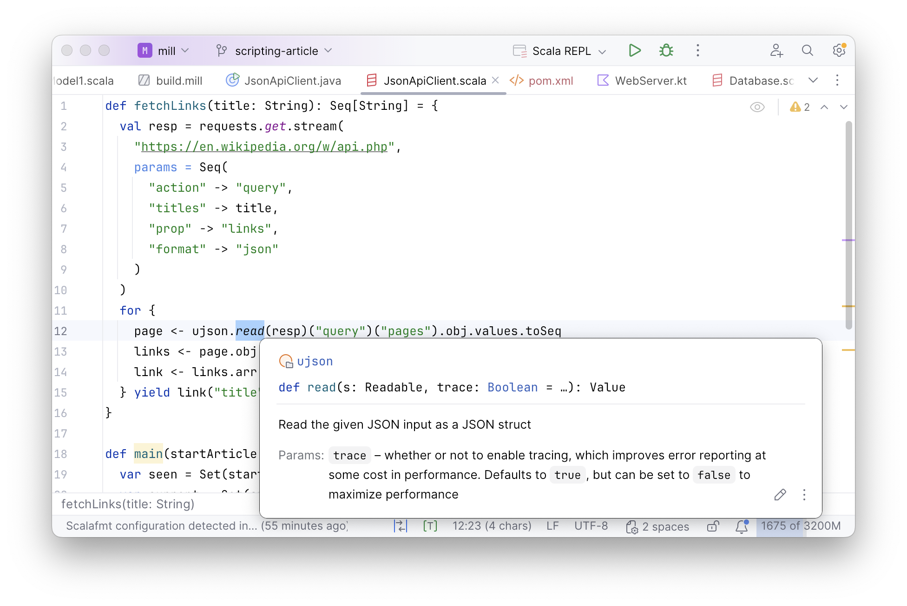

Scripting on the JVM with Java, Scala, and Kotlin
Li Haoyi, 12 February 2026
Lots of people write code in Java, Scala, or Kotlin, but that code is normally relegated to large enterprise codebases. This article will explore the pros and cons of using JVM languages for small-scale scripting instead, as an alternative to Python, Javascript, or Bash:
-
How the performance and compile-time safety of the JVM are advantages over scripting languages
-
How verbosity, build tool overhead, and lack of script-focused libraries cause issues
-
How lightweight languages, tooling, and libraries are able to smooth over some of those issues
By the end of this article, you will see how the JVM can be truly a world-class scripting environment as robust and convenient as any scripting language out there.
An Example Java Single-file Script
Consider this small Java program that someone may write. This program uses unirest-java and jackson-databind to fetch the links of a wikipedia page via the wikipedia API, which it then uses to perform a breadth-first traversal of the wikipedia article graph. The user provides the starting input via command-line articles parsed with picocli.
import com.fasterxml.jackson.databind.*;
import kong.unirest.Unirest;
import picocli.CommandLine;
import java.io.*;
import java.nio.file.*;
import java.util.*;
import java.util.concurrent.Callable;
@CommandLine.Command(name = "Crawler", mixinStandardHelpOptions = true)
public class JsonApiClient implements Callable<Integer> {
@CommandLine.Option(names = {"--start"}, required = true, description = "Starting title")
private String start;
@CommandLine.Option(names = {"--depth"}, required = true, description = "Depth of crawl")
private int depth;
private static final ObjectMapper mapper = new ObjectMapper();
public static List<String> fetchLinks(String title) throws Exception {
var response = Unirest.get("https://en.wikipedia.org/w/api.php")
.queryString("action", "query")
.queryString("titles", title)
.queryString("prop", "links")
.queryString("format", "json")
.header("User-Agent", "WikiFetcherBot/1.0 (https://example.com; contact@example.com)")
.asString();
if (!response.isSuccess())
throw new IOException("Unexpected code " + response.getStatus());
var root = mapper.readTree(response.getBody());
var pages = root.path("query").path("pages");
var links = new ArrayList<String>();
for (var it = pages.elements(); it.hasNext();) {
var linkArr = it.next().get("links");
if (linkArr != null && linkArr.isArray()) {
for (var link : linkArr) {
var titleNode = link.get("title");
if (titleNode != null) links.add(titleNode.asText());
}
}
}
return links;
}
public Integer call() throws Exception {
var seen = new HashSet<>(Set.of(start));
var current = new HashSet<>(Set.of(start));
for (int i = 0; i < depth; i++) {
var next = new HashSet<String>();
for (var article : current) {
for (var link : fetchLinks(article)) {
if (!seen.contains(link)) next.add(link);
}
}
seen.addAll(next);
current = next;
}
try (var w = Files.newBufferedWriter(Paths.get("fetched.json"))) {
mapper.writerWithDefaultPrettyPrinter().writeValue(w, seen);
}
return 0;
}
public static void main(String[] args) {
System.exit(new CommandLine(new JsonApiClient()).execute(args));
}
}While this example is a toy program, it is representative of the many kinds of small programs or scripts that people typically use scripting languages for: simple code gluing together various data sources and APIs and performing some simple computation based on them.
Typically these are written in Python, Javascript, or Bash. The example above in contrast is written in Java, which is not very common. Why would someone want to do that, and what are the challenges of doing so?
Benefits of Scripting on the JVM
While the JVM isn’t traditionally thought of as a scripting platform, in reality there are many benefits from writing and running your scripts on the JVM:
Library Ecosystem
Java libraries are mostly hosted on Sonatype Central, which is one of the largest and most comprehensive sets of third-party libraries of any programming language. This includes high-quality well-maintained libraries such as Jackson, Unirest, and PicoCLI that we used above. Other JVM languages like Kotlin or Scala host their libraries on the same platform, which allows them to interoperate and use each other’s libraries. If a library exists anywhere in the world, it is likely you will find a Java version of it on Sonatype Central for you to use.
IDE Support
Java is known for having great IDEs such as IntelliJ that make it much easier to navigate, understand, and work with your codebase. This is just as helpful for small scripts as it is for larger applications, as even in scripts you may be working with unfamiliar third-party libraries for which IDE assistance can be especially helpful.

Toolability
Beyond the IDE, the JVM probably has the best tools of any programming ecosystem. From simple things like jstack to debug stuck processes, to Yourkit or JProfiler to investigate tricky performance issues. Many of these come in handy when working with small scripts, which like application code can get stuck or become slow and need investigation and debugging.
Performance
While people often neglect the performance of scripts and small programs, just as often you find people complaining that poorly-optimized scripts are slow and taking longer than they need to. The JVM not only provides excellent single-core performance that’s 10-20x faster than traditional scripting languages, it also allows you to easily spawn threads to parallelize your script across multiple cores. This makes it much easier to optimize and fix slow scripts on the JVM than when running on slower single-threaded runtimes like Node.js or Python
Compile-time Checking
Scripts have a reputation for being fragile and easy to break. This is because they are often poorly tested, for a variety of reasons:
-
They are often ad-hoc glue code between different systems, and evolve rapidly as requirements change
-
They often interact with external files, processes, or APIs that may be difficult to mock out
-
They can run relatively slowly, making automated testing slow and expensive
Writing your scripts in a JVM language like Java, Scala or Kotlin doesn’t solve the testing problems above, but it does give you one more tool to lean on: the compiler checking that all your method calls and parameter types are properly wired up. While this won’t catch every bug, it at least provides an additional guardrail helping prevent silly mistakes and nudging your scripts towards correctness.
Challenges of Small-Scale Java Programs
While there are many benefits to writing scripts running on the JVM, in practice it can be quite challenging to effectively use Java or other JVM languages to write scripts.
Script Verbosity
The first thing you may notice is: the program above is pretty verbose! Although the Java
language has gotten more concise over the years, with features like the var keyword
that we make good use of in the script above, overall Java code tends to still be
significantly more lines than a typical scripting language. While
the code above seems fine, it might not seem elegant enough that you would choose
to write your scripts in Java on the JVM rather than Python.
Tricky installation
The next thing you might deal with writing scripts is how to run them: you need java,
and you need a build tool like Maven
-
Installing Java can be surprisingly tricky (link), with a lot of subtle choices and decisions and ways things can go wrong. Installing Maven similarly can take some fiddling
-
Installing Java and Maven on all environments your script may run on is more difficult: you need to ensure every laptop, CI work, or production machine has the same exact versions of Java and Maven installed.
-
Most difficult is maintaining this installation over time: as laptops get provisioned and retired, Java or Maven versions get upgrades, CI workers and production servers get cycled out, ensuring that every machine has the right version of Java and Maven installed at all times can be quite challenging.
Installing Java and Maven is not a blocker. But it is certainly something that can be a lot more fiddly than expected, especially when you have to ensure consistency over a fleet of heterogeneous machines and ensure it stays consistent over time.
Configuring Maven is Tedious
Once you have Java and Maven installed, you then need to configure Maven to build it. The script above has three third-party dependencies, so the Maven config looks something like this:
<?xml version="1.0" encoding="UTF-8"?>
<project xmlns="http://maven.apache.org/POM/4.0.0"
xmlns:xsi="http://www.w3.org/2001/XMLSchema-instance"
xsi:schemaLocation="http://maven.apache.org/POM/4.0.0 http://maven.apache.org/xsd/maven-4.0.0.xsd">
<modelVersion>4.0.0</modelVersion>
<groupId>com.example</groupId>
<artifactId>json-api-client</artifactId>
<version>1.0.0</version>
<packaging>jar</packaging>
<properties>
<maven.compiler.source>17</maven.compiler.source>
<maven.compiler.target>17</maven.compiler.target>
<project.build.sourceEncoding>UTF-8</project.build.sourceEncoding>
</properties>
<dependencies>
<dependency>
<groupId>info.picocli</groupId>
<artifactId>picocli</artifactId>
<version>4.7.6</version>
</dependency>
<dependency>
<groupId>com.konghq</groupId>
<artifactId>unirest-java</artifactId>
<version>3.14.5</version>
</dependency>
<dependency>
<groupId>com.fasterxml.jackson.core</groupId>
<artifactId>jackson-databind</artifactId>
<version>2.17.2</version>
</dependency>
</dependencies>
<build>
<plugins>
<plugin>
<groupId>org.codehaus.mojo</groupId>
<artifactId>exec-maven-plugin</artifactId>
<version>3.4.1</version>
<configuration>
<mainClass>JsonApiClient</mainClass>
</configuration>
</plugin>
</plugins>
</build>
</project>While this Maven config isn’t particularly complicated, it is quite a screenful of text we need to write or copy-paste from somewhere in order to get our small script running. Again, not a blocker, but more fiddly stuff to set up and maintain just to write our single-file Java program.
Running Maven is Tedious
Lastly, we need to run our script with Maven. The command to do so is as follows:
> mvn compile exec:java -Dexec.args="--start Functional_programming --depth 2"The single-line command for running your Maven project has a whole bunch of footguns you need to avoid:
-
Remember to
compilefirst, otherwise your compiled code may be out of date! -
Remember to
exec:javarather than justexec! -
Remember to pass in arguments via
-Dexec.argsrather than passing them indirectly! -
If your arguments themselves need to be quoted, remember to double-escape your nested quotes, or triple-escape them if the arguments themselves contain quotes!
This may seem nitpicky - and it is! - but it’s just another papercut in making it
annoying to run the JsonApiClient.java file we have already written.
None of these issues with Maven or Java are fatal. We’ve all been writing and running Java programs for decades by now, in my case since Java 4 in 2004. But the sum-total of all these papercuts is that it’s not pleasant to write small programs in Java. Even modern AI assistants have limited context windows and benefit from having concise code to work with, and don’t benefit from digging through verbose boilerplate, fiddling with installation problems, or deal with and awkward tooling that fills up their context windows.
And so small programs and scripts end up being written in Python or Bash or Javascript. Even though in theory Java or Scala or Kotlin could work, in practice nobody uses them for scripting.
Improving the JVM Scripting Experience
While there are many issues with scripting on the JVM, these issues are not insurmountable. Next we’ll discuss some of the solutions and workarounds that can mitigate these problems, to provide the streamlined scripting experience that the JVM deserves
Mill as a Lightweight Build Tool
The first thing we can do to simplify our script workflow is to use a lighter weight
build tool such as JBang or Mill. These tools make it much
easier to configure some third-party dependencies and compile/run a single file.
For example, JBang lets you write
//DEPS header comments
and run the .java file directly from the command line:
//DEPS info.picocli:picocli:4.7.6
//DEPS com.konghq:unirest-java:3.14.5
//DEPS com.fasterxml.jackson.core:jackson-databind:2.17.2
import com.fasterxml.jackson.databind.*;
import kong.unirest.Unirest;
import picocli.CommandLine;
...> jbang JsonApiClient.java --start Functional_programming --depth 2The Mill build tool uses a similar YAML header syntax that looks a bit different but otherwise works basically the same way:
//| mvnDeps:
//| - info.picocli:picocli:4.7.6
//| - com.konghq:unirest-java:3.14.5
//| - com.fasterxml.jackson.core:jackson-databind:2.17.2
import com.fasterxml.jackson.databind.*;
import kong.unirest.Unirest;
import picocli.CommandLine;
...> ./mill JsonApiClient.java --start Functional_programming --depth 2
> cat fetched.json | jq
[
"Agent-based model in biology",
"Answer set program",
"Algebraic data type",
"Functional_programming",
"Atom (text editor)",
"Actor-Based Concurrent Language",
"Audrey Tang",
"A440 (pitch standard)",
"Abductive logic programming",
"ALGAMS",
"110 film",
"Bibcode (identifier)",
".NET",
"BSD licenses",
...Such lightweight build tools make it much easier to run our small Java program:
-
Both JBang and Mill make it super easy to configure dependencies and run scripts from the command line by adding a header to the single-file Java program, solving the Configuring Maven is Tedious and Running Maven is Tedious problems above
-
Mill with its
./millbootstrap script also solves Tricky installation problem, as./millwill automatically download & cache the JVM and build-tool installation and ensure you are using the correct, consistent version
However, even if building and running small scripts written in Java is convenient, writing and maintaining the code itself can be a pain due to the verbosity of the Java language and libraries that makes even simple programs take pages and pages of code. While Java’s verbosity may be fine - or even beneficial - for complicated application code, the same verbosity can get in the way of writing throwaway scripts.
But Java isn’t the only language on the JVM!
Kotlin as a Lightweight Language
One option to consider is to write the script in Kotlin. Kotlin is much more syntactically concise
than Java, which means much less code to write the same things overall. A version of the
JsonApiClient.java translated to Kotlin is shown below, using the Kotlin
Clikt library rather than PicoCLI:
//| mvnDeps:
//| - com.github.ajalt.clikt:clikt:5.0.3
//| - com.konghq:unirest-java:3.14.5
//| - org.jetbrains.kotlinx:kotlinx-serialization-json:1.7.3
import com.github.ajalt.clikt.core.CliktCommand
import com.github.ajalt.clikt.core.main
import com.github.ajalt.clikt.parameters.options.*
import com.github.ajalt.clikt.parameters.types.int
import kotlinx.serialization.json.*
import kong.unirest.Unirest
import java.nio.file.*
fun fetchLinks(title: String): List<String> {
val response = Unirest.get("https://en.wikipedia.org/w/api.php")
.queryString("action", "query")
.queryString("titles", title)
.queryString("prop", "links")
.queryString("format", "json")
.header("User-Agent", "WikiFetcherBot/1.0 (https://example.com; contact@example.com)")
.asString()
if (!response.isSuccess) return emptyList()
val json = Json.parseToJsonElement(response.body).jsonObject
val pages = json["query"]?.jsonObject?.get("pages")?.jsonObject ?: return emptyList()
return pages.values.flatMap { page ->
page.jsonObject["links"]
?.jsonArray
?.mapNotNull { it.jsonObject["title"]?.jsonPrimitive?.content }
?: emptyList()
}
}
class Crawler : CliktCommand(name = "wiki-fetcher") {
val start by option(help = "Starting Wikipedia article").required()
val depth by option(help = "Depth of link traversal").int().required()
override fun run() {
var seen = mutableSetOf(start)
var current = mutableSetOf(start)
repeat(depth) {
val next = current.flatMap { fetchLinks(it) }.toSet()
current = (next - seen).toMutableSet()
seen += current
}
val jsonOut = Json { prettyPrint = true }
.encodeToString(JsonElement.serializer(), JsonArray(seen.map { JsonPrimitive(it) }))
Files.writeString(Paths.get("fetched.json"), jsonOut)
}
}
fun main(args: Array<String>) = Crawler().main(args)> ./mill JsonApiClient.kt --start Functional_programming --depth 2The Kotlin program has about 1/3 fewer lines than the Java equivalent, and overall much less
dense. Kotlin features like the properties used to define
val depth and val start, ?, and .mapNotNull simplify the
code substantially. This makes it possible to express the same program in a much less verbose syntax.
As Kotlin is also a JVM language, it comes with all the same benefits as writing scripts in Java, e.g. the excellent IDE support provided by editors such as IntelliJ:

This makes using Kotlin a great way to streamline the scripting experience on the JVM. Although the example above uses Mill as the build tool, Kotlin also supports its own scripting workflows, which are also used in Gradle and other projects.
Although scripts in Kotlin are markedly nicer to write and read than scripts written in Java, there is one more step further that we can take:
Scala with its Lightweight Libraries
The last step to simplify scripting on the JVM is to write the script in Scala.
Scala is yet another JVM language, like Kotlin. But unlike Kotlin, Scala has
many script-focused libraries such as OS-Lib,
MainArgs,
Requests-Scala,
uPickle,
or PPrint that make it very convenient to write
small script-like programs in Scala. The above JsonApiClient.kt translated to an equivalent
JsonApiClient.scala is shown below:
def fetchLinks(title: String): Seq[String] = {
val resp = requests.get.stream(
"https://en.wikipedia.org/w/api.php",
params = Seq(
"action" -> "query",
"titles" -> title,
"prop" -> "links",
"format" -> "json"
)
)
for {
page <- ujson.read(resp)("query")("pages").obj.values.toSeq
links <- page.obj.get("links").toSeq
link <- links.arr
} yield link("title").str
}
def main(start: String, depth: Int) = {
var seen = Set(start)
var current = Set(start)
for (i <- Range(0, depth)) {
current = current.flatMap(fetchLinks(_)).filter(!seen.contains(_))
seen = seen ++ current
}
pprint.log(seen)
os.write(os.pwd / "fetched.json", upickle.stream(seen, indent = 4), overwrite = true)
}> ./mill JsonApiClient.scala --start Functional_programming --depth 2What is notable about JsonApiClient.scala is how much less stuff there is to read,
with about 1/2 the lines of code as JsonApiClient.kt and 1/3 the lines of code as
the JsonApiClient.java:
-
The
requests.get,ujson.read, andos.writeAPIs come from the Mill’s bundled libraries, which makes it super easy to interact with the filesystem, subprocess, and JSON APIs over HTTP -
Rather than parsing arguments via annotations or a special class, which is how it’s done in PicoCLI or Clikt,
JsonApiClient.scalauses MainArgs which lets you simply define adef mainmethod and turns the parameter list into the command-line parser
In general, the Scala script we see above looks similar to any scripting language. It has code that specifies clearly the logical steps of accessing the Wikipedia API and performing the breadth-first search, but without the verbose machinery necessary to implement that logic in Kotlin or Java. And although the Scala program is much shorter and more concise than the Java program we started with, overall it still has all the benefits of running on the JVM:
-
We can depend on any JVM library via
//| mvnDeps. Scala can make use of both Java and Scala-specific libraries, and so you can always find a library to do whatever you need to do -
All other JVM tools work with Scala just as easily as they do with Java:
jstack, Yourkit, JProfiler, etc. -
Scala performance is just as good as Java performance, and it makes it even easier to parallelize things using
scala.concurrent.Futureso your scripts can make full use of the multiple cores available on any modern computer. -
We have full support in IDEs like IntelliJ or VSCode:

Parallelizing Our Scripts
Since our JsonApiClient.scala script is running on the JVM, we can take advantage
of the JVM’s support for threading to parallelize our web crawl. The example below
does this using the standard library scala.concurrent.Future API, that builds upon
Java Threads to make each fetchLinks call run on a configurable thread pool:
import scala.concurrent.*, duration.Duration, ExecutionContext.Implicits.global
def fetchLinks(title: String): Seq[String] = {
val resp = requests.get.stream(
"https://en.wikipedia.org/w/api.php",
params = Seq(
"action" -> "query",
"titles" -> title,
"prop" -> "links",
"format" -> "json"
)
)
for {
page <- ujson.read(resp)("query")("pages").obj.values.toSeq
links <- page.obj.get("links").toSeq
link <- links.arr
} yield link("title").str
}
def main(start: String, depth: Int) = {
var seen = Set(start)
var current = Set(start)
for (i <- Range(0, depth)) {
current = current
.map(c => Future{ fetchLinks(c) })
.map(Await.result(_, Duration.Inf))
.flatten
.filter(!seen.contains(_))
seen = seen ++ current
}
pprint.log(seen)
os.write(os.pwd / "fetched.json", upickle.stream(seen, indent = 4), overwrite = true)
}This kind of ad-hoc parallelism is something that is very difficult or messy to achieve in traditional scripting languages like Python, Bash, or Javascript. But when scripting on the JVM, threads and threading-related libraries are very easy to use, which makes it super easy to speed up the large portion of slow scripts that turn out to be trivially parallelizable.
Conclusion
In this article, we discussed how scripts can benefit from the JVM’s library ecosystem, IDE support, tools, and performance, but also how they are hampered by Maven’s clunkiness, Java’s verbosity, and the lack of script-focused libraries. We explored solutions to these issues, by running our scripts in Mill to simplify the workflow, porting them to Kotlin to cut down on the verbosity, and moving to Scala to take advantage of the many scripting-focused libraries in the Scala ecosystem.
Scripting on the JVM has never been very popular in the past, with projects like JRuby or Jython not taking off, and most JVM projects still relying on a mix of Python or Bash for their scripting needs. Even with the solutions discussed above, other issues such as the JVM’s slow startup time and large memory footprint remain as challenges
Despite that, scripting on the JVM can definitely be a valuable tool in your toolbox. If you are interested in learning more about scripting in Java, Kotlin and Scala, check out the links to the documentation below: